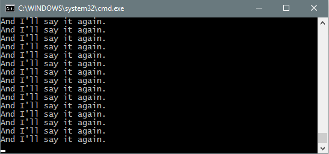
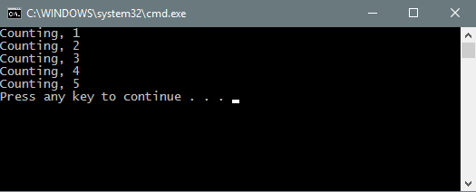
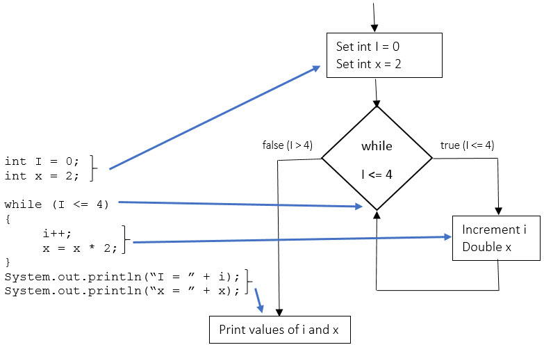

| Input Validation | Solving Loop Problem | Flow Diagrams |
A while loop is a repetiton structure. It causes a block of code to run again and again as long as some condition is true. The condition is placed in parentheses after the word while. In the example below, the condition will always be true, so the line of code inside the braces will repeat until the program is termintated.
while{1 == 1} { System.out.println("And I'll say it again."); }

Equivalently, we could have used true as a condition.
while{true} { System.out.println("And I'll say it again."); }
Note that a semicolon is not placed after the while statement. The while statement only affects the next thing that follows it. We want the next thing to be a block of code in braces. If a semicolon is put after the while statement, the semicolon will be seen as the next thing. Everything before the semicolon (nothing) will repeat again and again forever. The block with the print statement will never be reached.
while{true}; { System.out.println("And I'll say it again."); ← Don't do this }
A loop that never ends if often called an "infinite loop", and is usually considered undesirable, especially if it doesn't do anything to indicate it is running. Usually the loop is designed so that something happens inside changing the condition, and ending the loop.
int x = 1 while(x < 6) { System.out.println("Counting, " + x); x = x + 1; }
In the example above, x is intialized to to 1. When the loop is reached for the first time, the condition is true. 1 is less than 6. The block inside the while braces runs printing the line
Counting, 1
and incrementing the value of x to 2. When the closing brace is reached, the while condition is checked again. Since it is still true(3 is less than 6), the block runs again.

The fifth time the block runs, "Counting, 5" is printed and, x is incremented from 5 to 6. When the closing of the while loop is reached, the condition is false. 6 is not less than 6. The loop ends, and the program continues.
The while loop condition is checked before each pass through the loop, including the first.
The while loop is particularly useful if we don't know in advance how many times the loop will repeat. The following program plays a coin flip game with the user. After each game, the user is asked to play again. If the answer is not "y", the program ends.
import java.util.Scanner; public class Coinflip { public static void main (String[] args) { Scanner in = new Scanner(System.in); String playAgain = "y"; String guess; while(playAgain.equals("y")) { System.out.println(I flip it, you call it.); System.out.println("h for heads, t for tails."); guess = in.nextLine(); if(guess.equals("h")) { System.out.println("You lose. It was tails."); } else { System.out.println("Play again? (y or n)"); } } } }
When the program starts, the String variable playagain is in initialized to "y". As long as this is true, the while loop will repeat. At the end of each game, the user is asked to play again. If the user types anything but "y", the while loop will end. This loop might run once, or thousands of times depending on the user.
As with if structures, while loops can be nested inside each other. The inner loop will run through all of its repetitions for each pass of the outer loop.
int cards; while playAgain.equals("y") { cards = 0; while(cards < 5) { cards = cards + 1; } }
The break statement causes the current loop to exit immediately. The program continues after the loop. Note that a break statement is used within a loop. It can not be used to exit an if or else block outside of a loop.
int x = 0; while(true) { x = x + 1; if(x > 25) { break; } } system.out.println("X exceeds 25");
If used in nested loops, the break statement only exits the innermost loop. There are times when the break statement is particularly convenient, but the preferred method of exiting a loop is to build the exit condition into the design of the loop.
A common use of a while loop is to validate user input. Suppose we ask the user to enter a positive integer. If the user enters a negative number, the program should complain and ask the user to enter a positive number again. This way, we make sure we have good data before we start using it.
The following code requires that the user enter a positive integer before moving on.
int x = 1; Scanner in = new Scanner(System.in); while(x < 0) { System.out.println("Please enter a positive integer."); x = in.nextInt(); } system.out.println("Yes " + x " is positive.");
Since x is initialized to -1 (less than 0), the while loop will execute the first time it is reached. After each run through the loop, the condition is checked again. If the user has entered a positive number, the condition x < 0 will be false, and the loop will not run again. The program continues.
As a second example of user input validation, suppose we have a game program that asks the user to play again, and expects either "y" or "n" as a response. We would like the program to check this input, and require the user to enter one of the two possible choices.
System.out.println("Play again? (y or n)"); playAgain = in.nextLine(); while( !(playAgain.equals("y") || playAgain.equals("n")) ) { System.out.println("Please enter y or n."); playAgain = in.nextLine(); }
The while loop will repeat as long as the condition is true, and exit when the condition is false. We need a condition that will be true for bad inputs, and false for good inputs (y or n). Consider the condition below.
playAgain.equals("y") || playAgain.equals("n")
This is true if the user entered y or n (a good input) and false otherwise, which is exactly the opposite of what we want. If we use the NOT operator on the entire condition, it will do what we wish.
!(playAgain.equals("y") || playAgain.equals("n"))
What is the output of this block of code?
int i = 0; int x = 2; while (i <= 4) { i++; x = x * 2; } System.out.println("i = " + i); System.out.println("x = " + x);
For problems involving loops, it is often useful to make a table showing the values of the variable after each pass through the loop. For the problem above, we want to repeat the loop until I is no longer less than or equal to 4.
| When | i | x |
|---|---|---|
| Initially | 0 | 2 |
| After first pass | 1 | 4 |
| After second pass | 2 | 8 |
| After third pass | 3 | 16 |
| After fourth pass | 4 | 32 |
| After fifth pass | 5 | 64 |
After the loop completes for the fifth times, i is 5, which is not less than or equal to 4. The loop ends, and the answer is:
i = 5 x = 64
A while loop can be depicted by a flow diagram in much the same way as an if/else structure. A diamond shape is used to represent the while condition. The diamond has a true branch and false branch. The true branch leads to the code block and loops back to the diamond. The false branch exits the loop.
